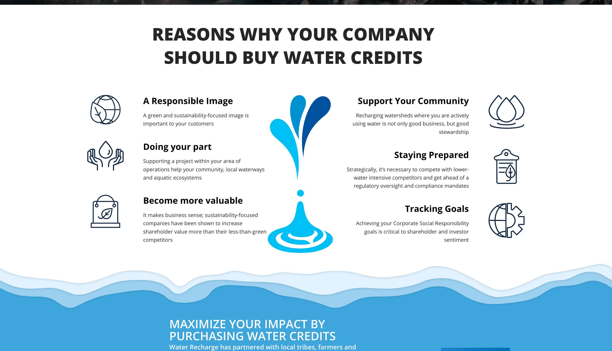

Water Recharge addresses the pressing issue of water basin depletion by pioneering the concept of water credits for replenishment. These credits, when purchased, contribute directly to the restoration of global watersheds, actively promoting responsible water consumption. By equating an individual's or organization's water footprint with a beneficial environmental use of water, this innovative approach fosters a deeper connection between us and our global watersheds, rivers, lakes, and oceans. Furthermore, the platform distinguishes itself as a unique e-commerce site, selling water credits that, in appreciation, offers customized NFTs as a lasting certificate of thanks. These NFTs serve not only as tokens of gratitude but also as enduring recognition of the buyer's contribution, with their names and contributions commemorated in the replenished regions.
Water Recharge harnesses a robust suite of technologies to ensure its mission is realized efficiently and securely. The project employs NodeJS and ExpressJS for backend processes, enhanced with TypeScript for type-safety and clearer code. Data management is streamlined with the PostgreSQL database and GraphQL, complemented by Prisma for seamless database integration. ReactJS shoulders the frontend development, while Docker aids in ensuring consistent environments across deployments. Additionally, various AWS services, such as the S3 bucket for asset storage and EC2 instances, reinforce the platform's infrastructure.
My involvement in Water Recharge extended far beyond just a few modules. While I significantly contributed to the Admin, Security, and Projects Handling sections, I also spearheaded the creation and management of projects within the site. This role required adept handling of access controls and automating the intricate processes of credit management, ensuring that contributions were aptly utilized and reflected in our database architecture. The transformative nature of the database was one of the key challenges I took on, making necessary adjustments to cater to the platform's evolving needs. Notably, this project was a cornerstone in my professional growth. I acquired a myriad of skills and knowledge, many of which I had the opportunity to apply later in my career, fortifying my technical prowess and adaptability in the ever-evolving tech landscape.